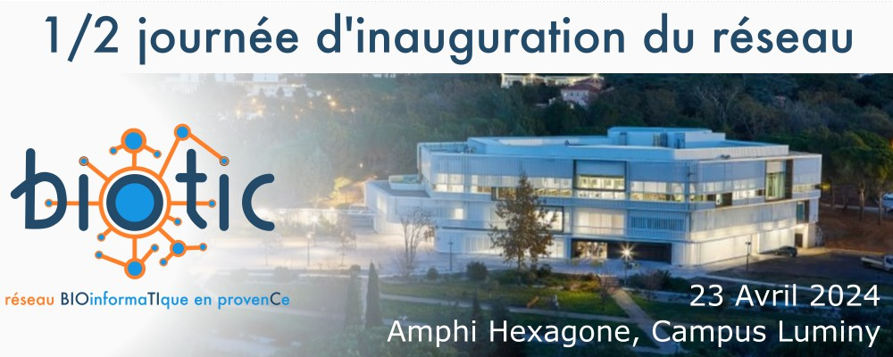

Le réseau BIOinformaTIque en provenCe (BIOTIC) - quésaco ?
Bienvenue dans le réseau BIOinformaTIque en provenCe (BIOTIC). Ce projet vise à fédérer la communauté bioinformatique en région Provence, en offrant un espace de collaboration et de partage pour les professionnels du domaine.
Welcome to the BIOinformaTIcs network in provence (BIOTIC). This project aims to bring together the bioinformatics community in the Provence region by providing a space for collaboration and sharing among professionals in the field.
Objectifs
L'objectif général est de fédérer la communauté bioinformatique autour d’un même réseau en région Provence.
Mais aussi :
- Faire connaître les métiers de la bioinformatique / Increase awareness of bioinformatics careers
Sensibiliser le public aux métiers et aux enjeux de la bioinformatique.
- Faciliter la Collaboration / Facilitating Collaboration
Créer une plateforme ou un espace virtuel pour partager des idées, des ressources et des compétences entre bioinformaticiens.
- Formation Continue / Training sessions
Organiser des sessions de formation, des ateliers et des webinaires pour permettre aux membres du réseau d'acquérir de nouvelles compétences et de rester à jour avec les avancées technologiques.
- Standardisation / Standardization
Encourager l'adoption de normes et de bonnes pratiques pour garantir la cohérence des méthodes et des résultats bioinformatiques.
- Veille Technologique / Technological Monitoring
Maintenir une veille constante sur les avancées technologiques en bioinformatique pour informer les membres du réseau.
- Soutien aux Jeunes Chercheurs / Support for Young Researchers
Fournir un soutien spécifique aux jeunes chercheurs en bioinformatique en facilitant l'accès à des mentors et à des opportunités de carrière.
- Événements de Réseautage / Networking Events
Organiser des événements réguliers, tels que des conférences, des symposiums ou des séminaires, pour favoriser les échanges entre les bioinformaticiens.
Organisation
Cette 1/2 journée BIOTIC est organisé par / This half-day BIOTIC event of is organized by
Vincent Lombard (CNRS AFMB, vincent.lombard@univ-amu.fr),
Fabrice Armougom (IRD MIO, fabrice.armougom@mio.osupytheas.fr),
Benoît Ballester (INSERM TAGC, benoit.ballester@inserm.fr),
Delphine Potier (CNRS CRCM, delphine.potier@cnrs.fr),
Romain Fenouil (CNRS, CIML, fenouil@ciml.univ-mrs.fr).
Sponsored by: